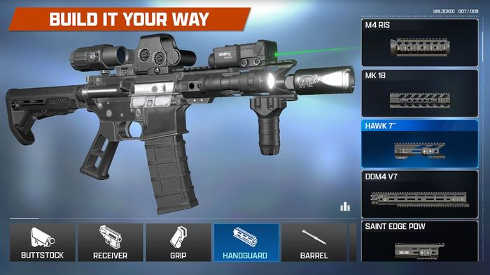
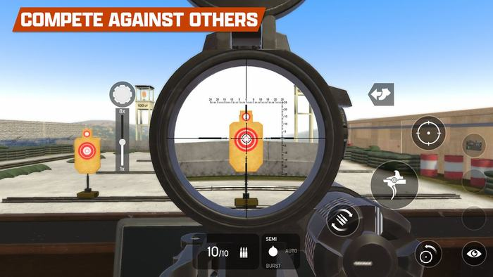
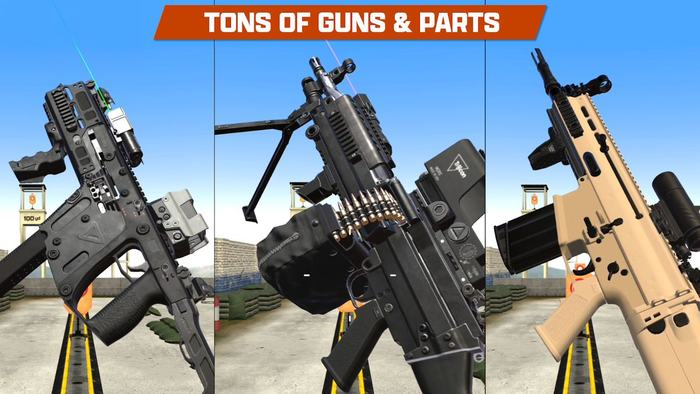
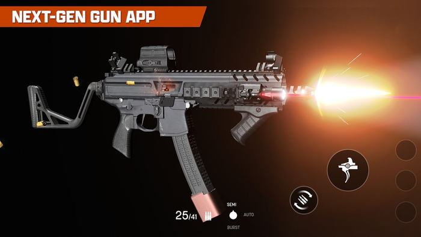

The problem with 500 parts
"Build a gun from any combination of parts" sounds like a content problem. It is really a combinatorics problem wearing a content problem's clothes. Five hundred parts across a handful of mount categories produce more valid configurations than anyone will ever hand-check, and every one of them has to look right, mount at the correct offset, and not clip through its neighbours.
Three failure modes made themselves obvious early:
- Silent visual breakage. A part mounts, but a millimetre off, and nobody notices until a player posts a screenshot.
- Content throughput bottlenecked on engineering. If adding a part needs a programmer, the content roadmap runs at programmer speed.
- Untestable monetisation. With this much content, guessing which parts to gate, bundle or price is guessing with the studio's revenue.
Each one got a system rather than a process.
The compatibility graph
Rather than encode compatibility as rules in code, every part declares its own mount points and what it accepts. Compatibility becomes a graph the tooling can traverse — which means it can be validated at author time instead of discovered at runtime.
Shape of the data
[CreateAssetMenu(menuName = "GBE/Weapon Part")]
public sealed class WeaponPart : ScriptableObject
{
public PartCategory Category; // receiver, barrel, optic, grip...
public MountSocket[] Provides; // sockets this part exposes
public PartCategory[] Accepts; // what may attach to them
public Vector3 GripOffset; // authored, not guessed
// Editor-only: runs in the pre-build validation pass.
public bool Validate(out string error) { /* ... */ }
}The payoff isn't the data structure, it's what it unlocks. Because the graph is queryable, the build can enumerate every reachable configuration and assert that each one resolves — no orphan sockets, no category that accepts nothing, no part with a missing offset. A malformed part fails the build rather than shipping and generating a support ticket.
The general lessonPush correctness as early in the pipeline as it will go. A constraint the editor enforces costs a designer five seconds; the same constraint discovered in production costs a patch cycle.
Taking myself out of the loop
The pipeline work is the part I'm proudest of, and it's the least visible. Before it, adding a weapon part meant a round trip through me: import the mesh, set compression, assign materials, wire the prefab, register it in a manifest, hook up the store entry. Six manual steps, each individually forgettable.
After, the artist drops a mesh into a watched folder and the tooling:
- Applies the import settings for its category — compression, mip behaviour, read/write flags.
- Generates the prefab with sockets bound from the mesh's named transforms.
- Registers the part in the manifest and its addressable group.
- Runs the validation pass and reports what's wrong in plain language.
What changed wasn't just my calendar. It changed who could iterate. Art could try a part, see it in-game, and throw it away — the cost of an experiment dropped far enough that people ran more of them.
Put a number on this. "Adding a part went from about 30 minutes of programmer time to under 2 minutes of artist time" — or whatever it truly was. This is the single most persuasive line on the page for a software engineering interviewer, because it's automation with a measurable business effect.
An A/B harness design could drive
The studio needed to test monetisation and progression changes without shipping a build per hypothesis. I built the experiment layer to sit behind remote config, so variants are data, not branches: a value is read through the experiment service, which resolves it against the user's assigned bucket and falls back to the shipped default if anything is unreachable.
Non-negotiables, learned the hard way:
- Deterministic, sticky bucketing. Assignment hashes a stable user ID, so a player never flips variant between sessions and skews the data.
- Offline-safe defaults. If config can't be fetched, the game plays the shipped values. An experiment framework that can break the game offline is not shippable.
- Variant recorded on every event. Otherwise you have results you can't attribute, which is worse than no results.
- A kill switch. Any experiment can be collapsed to control remotely, without a store submission.
The design goal was that I shouldn't be involved in running an experiment. Design defined the variants and read the funnels themselves.
What 100K installs teaches you
A six-figure install base surfaces things a test device never will. Device fragmentation is the obvious one — a working build on twenty phones is not a working build on twenty thousand. The subtler lessons:
- Crash triage is a skill, not an afterthought. Grouping by device tier and OS version turns a wall of stack traces into two or three actual bugs.
- Save data has to survive your own mistakes. Migration paths and defensive deserialisation, because a schema change that wipes progress is unrecoverable reputationally.
- Store metadata is engineering-adjacent. Build size affects install conversion. That makes asset budgets a business concern, not a programmer's preference.
Trade-offs & regrets
- The validation pass ran at build time, not on save. Correct place, wrong moment — feedback arrived minutes after the mistake instead of seconds. I'd wire it into asset post-processing now.
- The experiment layer had no analysis surface. I built clean assignment and clean event tagging, then left interpretation to spreadsheets. A thin results view would have paid for itself in a fortnight.
- The offset data was authored, and authored data drifts. Deriving mount offsets from mesh sockets directly would have removed a whole class of "looks slightly wrong" bugs that we instead caught by eye.
Gallery



